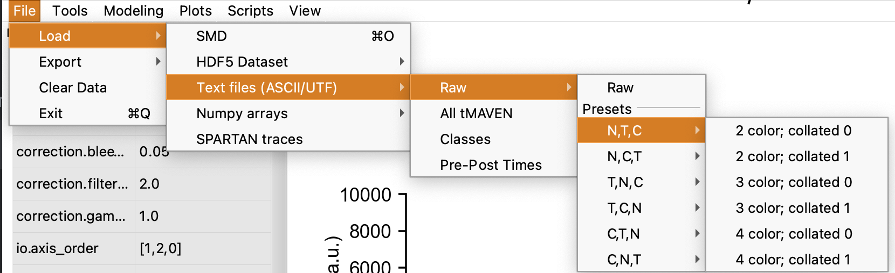

2. Navigating
Loading Data
tMAVEN can support ASCII, SMD (Greenfeld et al. 2015 , HDF5 based), raw HDF5, and SPARTAN files. Load data by hitting File/Load, select file type, and then the file itself. Note that class, pre/post etc. files may be uploaded separately. The default upload settings are for SMD format, so if using ASCII files, the upload setting must be chosen through the menus File/Load/Text files (ASCII/UTF)/Raw/[user’s format]. In this section, N refers to number of traces, T to number of time points and C to number of color channels for some N by T by C format. C,T,N is most common format such as in vbFRET (Bronson et al. 2009) and ebFRET (Meent, Bronson, and Gonzalez 2014). Alternatively, if using Raw, users can manually alter settings for uploading under “io.” preferences: Namely, io.axis_order for which [0,1,2] corresponds to [N,T,C]. Decollate_axis (0 or 1) refers to how the text separates individual traces, and the delimiter may be inputed under io.delimiter.

Note that any preferences using True/False are case sensitive. There is also an HDF5 viewer tool under View/ that the user may find useful.
The Molecule Table
Navigate to the molecule table View/Molecule Table or hit command T to bring up the molecule table. Notice the columns:
- Class: the class of the trace, change a trace’s class by clicking its row in the molecule table and inputing a number, or simply by clicking around the plot and keying a number.
- On/Off: Whether the trace is turned on. By toggling a trace one can easily choose which traces are included in modeling and plotting features, see section 4. It will also toggle whether the trace is subject to actions like save.
- Pre/Post: The range of time each cut trace covers
- Source: If modeling from different datasets, the origin of each trace can be seen here. Note that the class can be assigned separately from the source.

Classifying traces is one of the most powerful aspects of tMAVEN.
Using the UI and Cutting a Trace
Navigate between traces by scrolling while graph window is selected or by using the scroll underneath the graphs (see Figure). Notice trace number and class of the graph displayed in the bottom right corner. Aspects of the graph can be adjusted in the graph settings and figure options (see Figure), or in preferences. Most of these settings are plot.[aspect] and include settings for the axes, subdivision ticks, time scale, and more. The user can always use the View/reset GUI command to set all these settings to default.

Most actions in tMAVEN do not alter the raw data of a trace, such as gamma and bleed-through corrections. Only cutting traces actually alters the pre and post times which can be seen in the molecule table or on the traces themselves. The user can set the post time by right clicking at the desired point on a graph or left clicking for the pre time. Notice that once a section has been cut out, it appears much fainter on the graph. Reset the pre and post times for a single trace by hitting R. Users can also use the square brackets to increase and decrease the post time by 1 point.
Other tools include the pan and zoom features (see Figure). Use the zoom tool to select a section of the graph to enlarge and to allow more precise selection of pre/post time. Additionally, hit G to toggle viewing subdivisions on the graph (settings for these can be altered in preferences as described earlier). Another useful tool is single photobleach detection, which finds and cuts out photobleaching for only the trace shown. Hit P to apply this tool to the shown trace. Photobleach for all traces is also available and is discussed in section 3.5.
But before any manual trace picking is done, it is highly recommended that the user employ the preprocessing tools described in section 3.